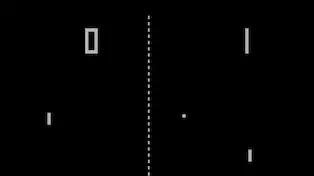
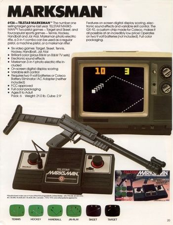
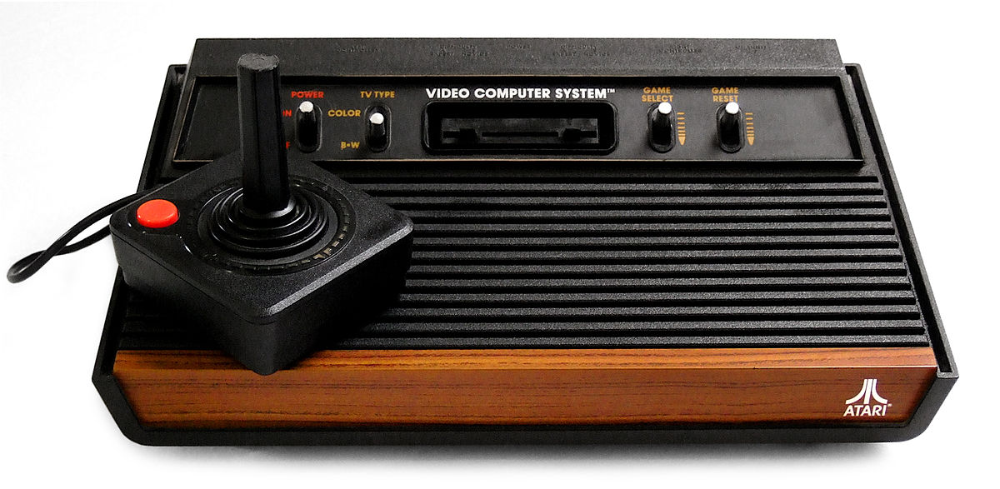

Inledning På den här sidan kommer du att få läsa om datorspelens historia. Håll dock i minnet att det finns oerhört mycket mer att säga. De fakta jag valt ut är så som jag har fått historien berättad för mig och så som jag kommer ihåg den. Bland multimedialänkarna till spelhistoria hittar du gott om sajter med ytterligare information om datorspelens historia.
En allra första början hittar man i den tekniska utvecklingen under slutet av 50- och under hela 60-talet. Det finns ett fåtal mycket enkla prototyper till ”datorspel” från denna tid. De flesta utvecklades av datorkunniga personer på universiteten runt om i världen. Det var ju ytterst få andra på den tiden som hade tillgång till datorer. De spel man hade tillgång till på sin fritid var antingen sällskapsspel eller enklare flipperspel i spelhallar. Men när man gjorde de första datorspelen var man tvungen att tänka helt nytt och man var dessutom begränsade av ytterst outvecklade datorer. De första datorspelen gjordes alltså av folk på universiteten och tillverkades inte för försäljning. Men de spel som togs fram gjorde ändå stor succé. Sajten The Dot Eaters skriver om hur det kunde gå till (min egen översättning): ”PÅ MIT 1961 fanns en grupp forskare som kallade sig ”The Tech Model Railroad Club”. De läste science fiction-böcker och fantiserade om krig mellan interstellära rymdskepp. En dag fick de en ny dator till sin avdelning. De behövde då ett program som kunde demonstrera den nya maskinens egenskaper. Tanken föddes då på att skapa ett spel som simulerade rymdkrigen.” Tillsammans skapade man Spacewar. Spelet hade två rymdskepp, som kallades ”kilen” (the wedge) och ”nålen” (the needle) eftersom de såg ut så. Grafiken var naturligtvis inte den bästa, men var med den tidens mått oerhört avancerad. Bakgrunden visade en svart stjärnhimmel och i mitten fanns en so, som på bilden är den lite större pricken i mitten. Solen drog in skeppen med sin gravitation. Det gällde att skjuta ner varandra utan att dras in i solen. Hamnade man i svårigheter fanns en ”hyperrymdsfunktion”, som innebar att man kunde trycka på en knapp för att hoppa till ett slumpvist valt ställe på skärmen. Dot Eaters fortsätter: ”Våren 1962 är spelet klart och väger då 9K. Det orsakar en sensation på MIT och det blir snabbt en lång kö av folk som vill spela. Snart börjar andra kopiera spelet och det sprids runt till andra universitet i USA.” Spelet lär vara ett av de mest kopierade någonsin och idén användes av i stort sett alla spelutvecklare under 60- och 70-talet. Upphovsmännen tog aldrig patent på sitt spel och anledningen var troligen att de aldrig kunde förstå hur utvecklingen skulle ta fart. På den tiden var kostnaderna för datorspel överväldigande. En dator kostade 120000 dollar, vilket även med våra dagars mått är en summa som de flesta människor inte har råd med. En arkadversion (standalone) fanns tillgänglig först 1977 och var stor som ett kylskåp! Spacewar är alltså en slags datorspelens urmoder. Spelet skapade en fokusering på datorspel och via det utvecklades joystickar och andra typer av spelkontroller.
 Magnavox och spelkonsoler Eftersom datorer var stora och dyra hade man först inga planer på att skapa just datorspel. I stället försökte man ta fram särskilda spelkonsoler som kopplades till en bildskärm. Företaget Magnavox lanserade 1972 konceptet ”Home TV Games”. Man använde sig av enkel elektronik för att få ner priset och spelboxen kopplas till TV-skärmen. Grafiken var svartvit och det fanns inget ljud. Varje box innehöll variationer på ett enda spel och hette sådant som ”Tennis”, ”Hockey”, osv. Spelkontrollerna var mycket enkla och hade rattar och knappar för att styra sakerna på skärmen. Magnavox sålde fler än 100000 maskiner första året och tack vare att man tagit patent på spelen tjänade man enorma summor. Man befann sig därför också ständigt i rättsliga tvister om patent, bl.a med företaget Atari (se nedan). Magnavox storhetstid varade under större delen av 70-talet, men konkurrensen hårdnade och spelkonsolernas tid var snart förbi. De skulle dock återuppstå, men först långt senare.
